在上一节中我们从经过变换后的势算出了电场和磁场。当然，场很重要，不管以前的论证曾经给出势具有物理意义及其真实性。场毕竟也是真实的。对于许多目的来说，如果你已经知道了在某个“静止”系统中的场，而又有办法去算出在运动系统中的场，那是很方便的。我们已有了关于ϕ和A的变换规律，因为Aμ 是一个四维矢量。现在希望弄清楚E和B的变换律。已知在一个参照系中的E和B，在另一个从旁边跑过的参照系中它们看来会像些什么呢？那该是一个便于得到的变换式。本来我们始终可以通过势而再算出场的，但如果能直接将场变换，有时仍挺有用。现在会看到那是怎样进行的。
如何能找到场的变换规律呢？我们已知道ϕ和A的变换规律，并已懂得了场是如何由ϕ和A给出的——要找出B和E的变换式就应该是容易的了（你也许会想到，对于每个矢量就可能有某种会使之成为四维矢量的东西，因而对于E来说，就一定有另一种可用来作为其第四分量的东西，而对于B也是如此。但事实却并非这样，与你所指望的很不相同）。作为开始，让我们仅仅考虑磁场B，那当然就是▽×A。现在知道，具有x，y，z各分量的矢势只是某种东西的一部分，此外还有一个t分量。而且也知道，对于像▽的微商，除了x，y，z各部分外，也还有对于t的微商。因此，让我们试算出若把“y”代以“t”，或把“z”代以“t”，或如此这般，则会发生什么。
首先，注意当把▽×A的各分量写出时，其中各项的形式是
x分量等于仅含有y与z分量的对偶项。假设把这个微商与分量的结合体称为“zy事件”，并给它一个速写名字Fzy 。我们的意思只是
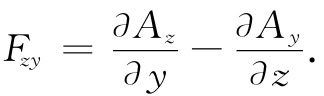 （26.15）
同样，By 等于这同类“事件”，但这回它却是“xz事件”了。而Bz 当然就是相应的“yx事件”。于是便有
Bx =Fzy ，By =Fxz ，Bz =Fyx . （26.16）
现在，若我们也试图编造出一些像Fxt 和Ftz 那样的“t”型事件（由于自然界在x，y，z和t方面应该是美好而对称的），则会有什么情况发生呢？例如，Ftz 是什么？当然，它就是
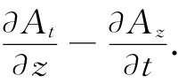
但要记住At =ϕ，因而它也等于
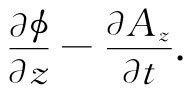
对此你以前就已见过。它是E的z分量。噢，几乎成了——还有符号错误。但我们忘记了在四维梯度中对t微商与对x，y，z的微商带有相反符号。因此，实际上我们应该取下式作为Ftz 更加一致的推广：
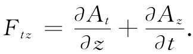 （26.17）
这样，它严格等于-Ex 。也可尝试算出Ftx 和Fty ，我们发现这三种可能事件给出
Ftx =-Ex ，Fty =-Ey ，Ftz =-Ez . （26.18）
如果两个下脚标都是t，又将出现什么情况呢？或者，对于此事来说，若两者都是x呢？我们会得到像如下的事件：
即这些都不外给出零值。
于是，就有六个这种F事件。还有六个你可以通过倒转下标而得的，但它们实际上不会给出任何新的事件，因为
Fxy =-Fyx ，
等等。所以，从四个下标取对的十六种可能组合中，仅得到六个不同的物理客体，而它们就是B和E的分量 。
为了表示出F的一般项，我们将采用普遍的下脚标μ和v，其中每一个各代表0、1、2或3——在通常的四维矢量符号表示法中指t，x，y和z。而且，一切都符合四维矢量符号表示法，只要对Fμv 作出如下的定义：
Fμv =▽μ Av -▽v Aμ ， （26.19）
请记住▽μ =（∂/∂t，-∂/∂x，-∂/∂y，-∂/∂z）和Aμ =（ϕ，Ax ，Ay ，Az ）。
我们已得到的是：在自然界中有六个合成整体的量——它们是同一件事件的不同方面。电场和磁场，在低速运动世界里（那里不需担心光速）被认为是彼此分开的矢量，而在四维空间里却并不是矢量。它们是一种新“事件”的各部分。物理“场”实际上是那具有六个分量的客体Fμv 。这就是我们必须把它作为相对论来考虑的方法。现在把有关Fμv 的结果概括在表26-1中。
表26-1 Fμv 的各分量
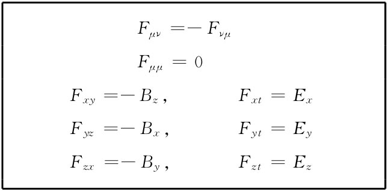你看到我们这里所做的就是推广叉积。要从旋度的运算及旋度的变换性质与两 矢量——通常的三维矢量A和已知道其行为也像一矢量的梯度算符——的变换性质相同这一事实出发。考察一下在三维中的一个普通叉积，比如一个粒子的角动量。当一物体在一平面内运动时，（xvy -yvx ）这个量是重要的。对于在三维中的运动，则有三个这样的重要量，称之为角动量：
Lxy =m（xvy -yvx ），Lyz =m（yvz -zvy ），Lzx =m（zvx -xvz ）.
然后（尽管你现在可能已经忘记了），我们曾在第1卷第20章中发现这样的奇迹，即这三个量可以与矢量的分量等同起来。为达到此目的，我们曾不得不用右手惯例来建立一个人为法则。那只不过是幸运。它之所以是幸运，因为Lij （i和j各可等于x，y或z）是一个反对称的事件：
Lij =-Lji ，Lii =0.
在九个可能的量中，只有三个独立的值。而碰巧当你改变坐标系时，这三个事件按与一矢量的分量完全相同的方式变换。
相同的事件允许我们把一个面积元表示成矢量。一个面积元有两部分——比如说dx和dy——这我们可用一个垂直于该面积的矢量da来表达。但我们不能在四维中这样做。垂直于dxdy的是个什么呢？它到底沿z方向还是沿t方向？
总之，对于三维而言碰巧在取了像Lij 那样的两矢量的组合之后，你又可把它用另一个矢量来表达，因为刚好有三项碰巧会像一个矢量的分量那样变换。但在四维中，那显然是不可能的，因为存在六个独立的项，而你不可能用四个事件来代表六个事件。
即使在三维中，很可能存在不能用矢量来表示的两个矢量的组合。假设任意取两矢量a=（ax ，ay ，az ）和b=（bx ，by ，bz ），并构成各种可能的分量组合，像ax bx ，ax by 等等。则应该有九个可能的量：
ax bx ， ax by ， ax bz ，
ay bx ， ay by ， ay bz ，
az bx ， az by ， az bz .
我们也许可以叫这些量为Tij 。
如果现在来到一个转动（比如说绕z轴转动）的坐标系中，a和b的各分量就会改变。在这一新参照系中，比如ax 由下式代替：
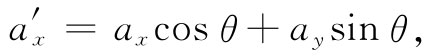
而by 则由下式代替：
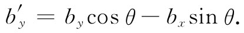
对于其他各分量也与此相仿。当然，由我们所发明的乘积Tij 的九个分量也全都改变了。例如，Txy =ax by 就变成
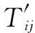 的每一分量就是Tij 的诸分量的一个线性组合。
因此发现，不仅可能有像a×b的那种“矢积”，它具有像矢量那样变换的三个分量，而且也能够人为地造成两矢量的另一种“乘积”Tij ，它有九个 分量，在转动之下，它们按我们能够计算出来的一组复杂法则而变换。这种要有两个下标、而不是单一下标才能加以描述的事件，叫作张量 。这是一个“二阶”张量，因为你也可以用三个矢量来做这一游戏，从而获得一个三阶张量——或用四个矢量而获得一个四阶张量，如此等等。一阶张量就是矢量。
所有这一切的要点在于，电磁量Fμv 也是一个二阶张量，因为它带有两个下标。然而，它是一个四维中的张量。它按一种即将算出来的独特方式变换——恰恰是矢量积的变换方式。对于Fμv ，如果你改变两下标的前后次序，则Fμv 碰巧会改变符号，那是一种特殊情况——它是一个反对称张量 。所以我们说，电场和磁场是四维中一个两阶反对称张量的两部分。
你们已经走过很长的路程，是否还记起好久以前我们对速度下定义的时候？现在正在谈论“四维中一个二阶反对称张量”。
眼前，我们得求出关于Fμv 的变换规律。这完全不难做到，只是有点麻烦罢了。无需动脑筋，但要做不少工作。我们所需要的是关于▽μ Αv -▽v Aμ 的洛伦兹变换。由于▽μ 不过是矢量的特殊情况，所以我们将处理普遍的反对称矢量组合式，可称为Gμv ：
Gμv =aμ bv -av bμ （26.20）
（对于我们的目的来说，aμ 最终将由▽μ 代替而bμ 由Aμ 代替）。aμ 和bμ 的各分量分别按照洛伦兹公式变换，它们是
现在来变换Gμv 的分量。要从Gtx 开始：
但这恰好就是Gtx ，因而有这么一个简单结果：
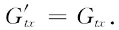
我们将再多做一个。
剩下的将怎样做就很清楚了。让我们对所有这六项都制成一表，不过此刻也可用Fμv 来写出罢了：
当然，仍旧有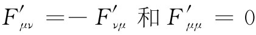 .
所以我们得到了电场和磁场的变换式。我们所必须做的一切就是去查表26-1以找出在用Fμv 的漂亮的符号表示法中改用E和B时意味着什么。那不过是如何代入的问题。为了使你能够清楚在通常的符号中看上去如何，我们将在表26-2中重新写出关于场分量的变换式。
表26-2 电场和磁场的洛伦兹变换（c=1）
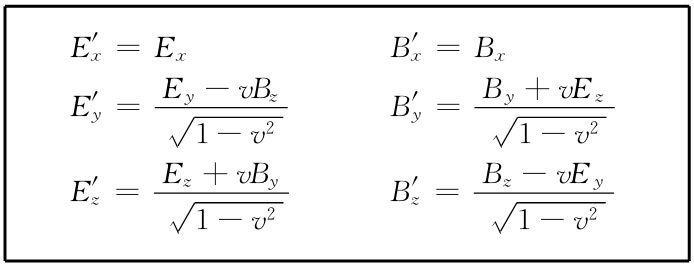表26-2中的那些式子告诉我们：如果从一个惯性系到另一个惯性系，E和B将怎样变化。若已知道在一个系中的E和B，则可求得在其旁边以速率v运动的另一个参照系中它们会变成什么。
表26-3 场变换的另一种形式（c=1）
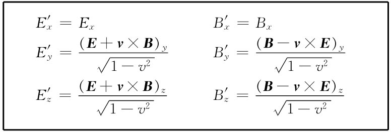如果注意到，由于v是在x方向上，因而所有含有v的项就都是叉积v×E和v×B的分量，那么便能把这些式子写成一种更易于记忆的形式。因此，可以重新将那些变换式写成如表26-3所示的形式。这样就较易于记住哪个分量在哪里。事实上，这种变换式甚至还可以写得更加简单。只要把沿x轴的场分量定义为“平行”分量E‖ 和B‖ （因为它们都平行于S与S′间的相对速度），而把总横分量——y和z两分量的矢量和——定义为“正交”分量E⊥ 和B⊥ ，就得到表26-4中的那些式子（我们已把c放回去了，使得以后要回过来参考时更为方便）。
表26-4 E和B的洛伦兹变换的又一种形式
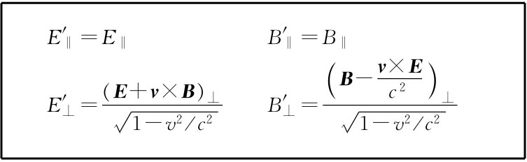这些场变换式为我们提供求解某些曾经解过的问题——比如求运动点电荷的场——的另一种方法。我们以前就曾通过对势取微商而算出了场，但现在有可能通过变换库仑场而做到这一点了。若有一个在S参照系中静止的点电荷，则那里只有简单的径向场。在S′参照系中，将会看到一个以速度u运动着的点电荷，如果S′参照系是以速率v=-u经过S参照系的话。我们将让你们证明，表26-3和26-4中的变换会给出与我们在§26-2中曾经得到的电场和磁场相同。
图26-7 坐标系S′正在穿过一个静电场而运动
如果我们运动并经过任何 固定的电荷系统，则对于我们所能看到的事件表26-2中的变换式会提供一个有趣而又简单的答案。例如，假定要知道在我们的 S′参照系中的场，倘若我们正在如图26-7所示的那个电容器两板之间运动着（当然，如果说一个充电电容器运动着经过我们 ，情况也一样），我们看到了什么呢？在这种情况下变换是轻而易举的，因为在原来的系统中，B场为零。首先，假定我们的运动是垂直于E的，则将看到一个仍然是完全横向的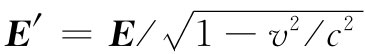 。此外，我们还将看到磁场B′=-v×E′/c2 （在关于B′的表式中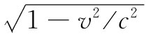 不会出现，因为我们是用E′而非用E来写出的，但那是同一回事）。因此，当我们垂直于一静电场而运动时，就会看到一个被增强了的E和一个附加的横向B。如果我们的运动并不垂直于E，则可将E分成E‖ 和E⊥ 两部分。该平行部分不会改变，即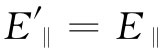 ，而其垂直部分则恰如刚才所述的那样变化。
现在要来考虑相反的情况，并设想我们正在穿过一个纯静磁 场而运动。这次会看到电 场E′，它等于v×B′，以及改变了一个因子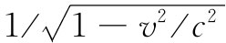 的磁场（假定它是横向的）。只要v比c小很多，就可以忽略磁场中的变化，而主要效应则是出现一个电场。作为这一效应的一个例子，试考虑测定飞机航速这个著名问题。目前这已经不再是著名的了，因为可以利用雷达从地面的反射波来测定空气的速率，但多年来在恶劣气候中找出飞机的速率一直是困难的。你不能见到地面，且又不知道哪个方向向上，等等，但要去弄清楚相对于地面你正在动得多快，仍然是十分重要的。见不到地面如何能做到这一点呢？许多懂得那些变换式的人们曾经琢磨过这种想法，即利用飞机在地球磁场中运动这一事实。假定飞机飞过的地方磁场大体上已经知道。让我们仅仅考虑磁场取垂直方向的简单情况。要是我们正在以一水平速度v飞过它，则按照公式，就会看到等于v×B的电场，也就是说，这电场垂直于飞行方向。假如安装一根被绝缘的导线横穿过机身，则这个电场便会在导线两端感生电荷。这并不是任何新的东西。从地面上某些人的观点来看，我们正在移动一根导线横穿磁场，因而v×B的力就会引起电荷流向导线两端。那些变换式不过是用另一种方式道出了同一件事情（我们能够以不只一种方法谈论同一件事情这个事实，并不意味某种方法比其他方法好。现在已有那么多的不同方法和工具，以致我们经常能够用65种不同方法获得相同的结果）。
所以为了测得v，我们必须做的一切就是去测量该导线两端间的电压。我们不能用一个伏特计来做这件事，因为同样的场也将作用于伏特计的导线上，但总会有测量这种场的一些方法。当我们在第9章中讨论大气电时就曾谈及某些方法。所以应该有可能测出飞机的航速。
然而，这一重要问题却从未用这种方式解决过。原因是，这样产生的电场约为每米几毫伏的数量级。这样的场本来是可以测出的，可是困难却在于，可惜这些场不能与其他电场做任何区别。由穿过磁场中运动所产生的场与从另一种原因，比如与在空气中或云雾上的静电荷所已经存在于空气中的某些电场，不能区分开来。我们曾在第9章中描述过在地球表面上空存在着强度约为100Vm-1 的典型电场。但它们很不规则。因而当飞机在空中飞过时，它会看到比起那由v×B项所产生的微小场还要强大得多的大气电场的起伏，而结果是由于实际原因不能凭飞机穿过地球磁场中的运动来测定它的航速。